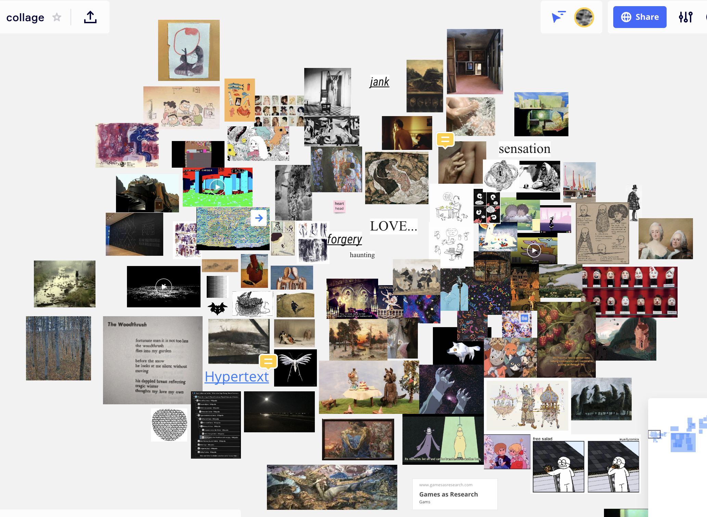
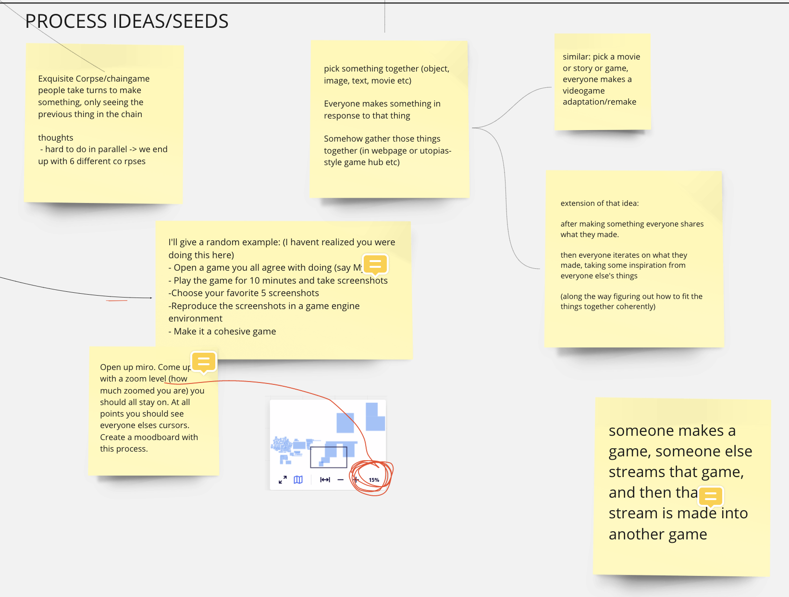

hi i'm darwin welcome to my blog where i will be talking about my experience with our collective collage poem game which is currently a work in progress. i hope that this will be a documentation of our semester-long process and also a helpful tool for personal and collective reflection later on.
wednesday feb 3Jen suggested we have some way of documenting our thoughts so for now we have this github pages site which we can all edit. we could also use this a space for prototyping web games/pages. i like this idea, i will try to keep personal notes on the process to look back on later, and as a record of whatever different ideas we tried etc. this is my very first blog post so i will recap what happened over the last few days.
last Friday in class there was a cluster of ideas around 'collaborative work that preserves individual voice', with the game utopias being a point of reference.


my personal stake in this idea comes from a frustration with the usual structure of game jams, group projects, etc, which seem to often go one of two ways:
- one or a few people end up having outsize influence on the theme/aesthetics/design/etc, which is miserable for everyone else
- people try to be diplomatic and democratic and 'incorporate everybody's ideas', which often results in something incoherent and unbalanced, or else just bland - a kind of 'averaging out' of everyone's individual preferences
this probably stems at least in part from my own characteristics that others don't necessarily share:
- my own preference for 'auteur' work (increpare, thecatamites, everest pipkin, etc etc (and ofc almost all painting, poetry, art film etc)) that imo usually turn out orders of magnitude more interesting than anything made by more than 2-3 people.
- my own incompetence in communicating my tastes & preferences to other people and navigating the micropolitics that usually quickly arises in these situations
so i was happy to see that other people were interested in doing something like this too.
in our first discord meeting yesterday we discussed a whole bunch of different ideas, one of the main themes was an interest in creating something together in which each person's individual taste is preserved, but still feels like a coherent whole. i liked utopias but Ty & others pointed out that the individual games mostly feel pretty unrelated which is a fair criticism. i don't really know if these things ('individual voice' and 'aesthetic unity') are fundamentally opposed (and the best we can hope for is a good middle-ground), or if there might be a way to have both.
we talked about all different kinds of things that we were interested in, trying to find common ground, also discussing different ideas for collaborative processes that we could use. i felt like the tension i mentioned above (multiplicity vs unity) became embodied as a tension in the group between people's different preferences towards one side or the other (i was heavy on the multiplicity side i think). in a way it felt like we were already experiencing all the awkward politics of 'collaborative art making', in trying to decide on a shared process - as though we'd just kicked the problem up from the level of form to the level of process, which i guess was inevitable. i find this stuff sometimes wears me out pretty quickly, and i was losing focus/motivation towards the end of the meeting (which was long). it didn't help that i was already feeling worn out that day mostly due to not having slept enough. on reflection i felt bad about maybe seeming uninterested / not contributing much to discussion, i hope i didn't bring the mood down. i thought i should try to think a bit more about my impact on other people's mood in future discussions. i thought about posting in discord to reaffirm my interest in the project ("sorry i was in a bad mood yesterday, i'm actually really excited for this") but it felt like too much.
still i think the discussion was pretty productive, especially the moodboard-type thing we made where we all added some images in an effort to sketch out some kind of 'vibe' for a project. i don't think we really created anything cohesive but it was a nice way to get an idea of different people's visual interests and get inspired etc. maybe a useful touchstone as we keep working.
we also wrote up a rough 'challenge' and a list of group values.

i was happy to see that someone added "take breaks, short meetings" later on. i was sad though when i saw that george was leaving, especially because his corner of the moodboard resonated most with me. i was wondering if i or we could have done something to show more openness to collaboration / not make anyone feel less valued, but i don't know.
in the meeting today after class i felt like the mood was brighter and i was motivated again, i felt a lucky warmth to be working with creative & interesting & kind people. we spent the time talking some more about different processes we could follow and figuring out how to map the class requirements of 'seeds' and 'prototypes' onto our project. we talked about some other collaboration-games like 'exquisite corpse' drawing, john zorn's Cobra, 'chain games', improv comedy. one thing that came up is the possibility of 'working collaboratively' even in these constrained settings – eg in exquisite corpse, thinking about how your drawing will be perceived by the next person: maybe deliberately aiming to produce some kind of cohesion in the final image. we felt like it would be worthwhile exploring a few different processes, which could be our 'seeds'. after trying different ways of creating and combining work ('prototyping'), we hope to settle on a process to use over the semester. we wrote up some of these different ideas on the miro board:
i like all of these ideas and i'm interested to try some of them out over the next week or two.